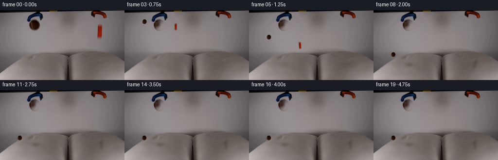
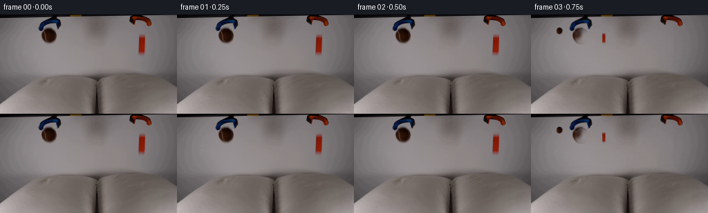
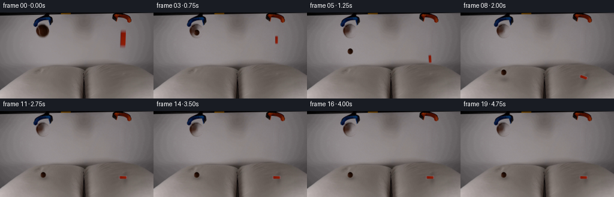
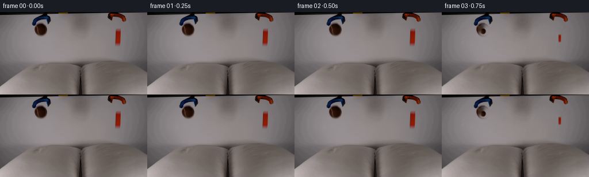

CODING AGENTS AS PIXEL WORLD MODELS
traex/DeepSeek-V4.1-Flash · 0002
点击播放 · 原生 RGB 像素
逐轮保存的候选
回放视频、检查图与代码变化。
每份候选均可单独播放。实际图片检查记录在下方工具轨迹中。
候选 01播放与检查图
点击播放 · 原生 RGB 像素


展开代码变化
--- 上一保存版本
+++ 本次保存版本
@@ -0,0 +1,245 @@
+from pathlib import Path
+
+import cv2
+import numpy as np
+from PIL import Image
+
+import artifact_io
+
+
+ROOT = Path(__file__).resolve().parent
+N_FRAMES = 20
+FPS = 4.0
+HEIGHT = 144
+WIDTH = 256
+
+
+def _feathered_ellipse(cx, cy, rx, ry, feather=0.7):
+ yy, xx = np.mgrid[:HEIGHT, :WIDTH]
+ distance = np.sqrt(((xx - cx) / rx) ** 2 + ((yy - cy) / ry) ** 2)
+ return np.clip((1.0 - distance) / (feather / min(rx, ry)) + 0.5, 0.0, 1.0)
+
+
+def _feathered_round_rect(x0, y0, x1, y1, radius, feather=0.8):
+ yy, xx = np.mgrid[:HEIGHT, :WIDTH]
+ qx = np.maximum(np.maximum(x0 + radius - xx, xx - (x1 - radius)), 0)
+ qy = np.maximum(np.maximum(y0 + radius - yy, yy - (y1 - radius)), 0)
+ outside = np.sqrt(qx * qx + qy * qy) - radius
+ inside_x = (xx >= x0) & (xx <= x1)
+ inside_y = (yy >= y0) & (yy <= y1)
+ signed = np.where(inside_x & inside_y, outside, np.maximum.reduce(
+ [x0 - xx, xx - x1, y0 - yy, yy - y1]
+ ))
+ return np.clip(0.5 - signed / feather, 0.0, 1.0)
+
+
+def _extract_sprite(image, alpha):
+ ys, xs = np.where(alpha > 0.01)
+ x0, x1 = max(0, xs.min() - 1), min(WIDTH, xs.max() + 2)
+ y0, y1 = max(0, ys.min() - 1), min(HEIGHT, ys.max() + 2)
+ crop_alpha = alpha[y0:y1, x0:x1].astype(np.float32)
+ crop_rgb = image[y0:y1, x0:x1].astype(np.float32)
+ return {
+ "rgb": crop_rgb,
+ "alpha": crop_alpha,
+ "center": np.array([(x0 + x1 - 1) * 0.5, (y0 + y1 - 1) * 0.5], dtype=np.float32),
+ }
+
+
+def _build_scene(image):
+ # Remove only the two held objects. The grippers and the entire room stay fixed.
+ ball_mask = _feathered_ellipse(72.0, 31.0, 9.3, 10.2, feather=1.3)
+ block_mask = _feathered_round_rect(199.5, 28.5, 210.5, 58.5, 1.1, feather=1.3)
+ removal = np.maximum(ball_mask, block_mask)
+ removal_u8 = (removal > 0.08).astype(np.uint8) * 255
+ clean = cv2.inpaint(image, removal_u8, 5, cv2.INPAINT_TELEA)
+
+ # Restore a little sensor grain in the repaired regions so they do not look plastic.
+ residual = image.astype(np.float32) - cv2.GaussianBlur(image, (0, 0), 1.1)
+ rng = np.random.default_rng(20261109)
+ grain = rng.normal(0.0, 1.25, image.shape[:2]).astype(np.float32)
+ grain = cv2.GaussianBlur(grain, (0, 0), 0.45)
+ clean = clean.astype(np.float32)
+ clean += grain[:, :, None] * (0.35 + 0.65 * removal[:, :, None])
+ clean += residual * 0.08 * removal[:, :, None]
+
+ ball_alpha = _feathered_ellipse(72.0, 31.0, 9.0, 10.0, feather=1.0)
+ block_alpha = _feathered_round_rect(200.0, 29.0, 210.0, 58.0, 0.9, feather=1.0)
+ return (
+ np.clip(clean, 0, 255).astype(np.uint8),
+ _extract_sprite(image, ball_alpha),
+ _extract_sprite(image, block_alpha),
+ )
+
+
+def _warp_sprite(canvas, sprite, center, angle=0.0, scale_x=1.0, scale_y=1.0, opacity=1.0):
+ rgb = sprite["rgb"]
+ alpha = sprite["alpha"]
+ source_center = sprite["center"]
+ sx = scale_x
+ sy = scale_y
+ rotation = np.deg2rad(angle)
+ c, s = np.cos(rotation), np.sin(rotation)
+ linear = np.array([[sx * c, -sy * s], [sx * s, sy * c]], dtype=np.float32)
+ offset = np.array(center, dtype=np.float32) - linear @ source_center
+ matrix = np.hstack([linear, offset[:, None]]).astype(np.float32)
+
+ warped_rgb = cv2.warpAffine(
+ rgb, matrix, (canvas.shape[1], canvas.shape[0]),
+ flags=cv2.INTER_LINEAR, borderMode=cv2.BORDER_CONSTANT, borderValue=(0, 0, 0),
+ )
+ warped_alpha = cv2.warpAffine(
+ alpha, matrix, (canvas.shape[1], canvas.shape[0]),
+ flags=cv2.INTER_LINEAR, borderMode=cv2.BORDER_CONSTANT, borderValue=0,
+ )
+ warped_alpha = np.clip(warped_alpha * opacity, 0.0, 1.0)[:, :, None]
+ return canvas * (1.0 - warped_alpha) + warped_rgb * warped_alpha
+
+
+def _add_soft_shadow(canvas, center, radii, strength, angle=0.0, blur=3.0):
+ yy, xx = np.mgrid[:canvas.shape[0], :canvas.shape[1]].astype(np.float32)
+ dx = xx - center[0]
+ dy = yy - center[1]
+ a = np.deg2rad(angle)
+ ca, sa = np.cos(a), np.sin(a)
+ u = ca * dx + sa * dy
+ v = -sa * dx + ca * dy
+ distance = (u / radii[0]) ** 2 + (v / radii[1]) ** 2
+ shadow = np.exp(-1.9 * distance) * strength
+ shadow = cv2.GaussianBlur(shadow, (0, 0), blur)
+ shadow = np.clip(shadow, 0.0, 0.65)[:, :, None]
+ tint = np.array([0.38, 0.34, 0.33], dtype=np.float32)
+ return canvas * (1.0 - shadow) + canvas * tint * shadow
+
+
+def _ball_motion(t):
+ release = 0.56
+ if t <= release:
+ return 31.0, 0.0, 0.0, 0
+
+ dt = 1.0 / 480.0
+ y, velocity = 31.0, 0.0
+ impact_time = None
+ impacts = 0
+ elapsed = 0.0
+ while elapsed < t - release:
+ step = min(dt, t - release - elapsed)
+ velocity += 142.0 * step
+ y += velocity * step
+ if y >= 107.0:
+ y = 107.0
+ if velocity > 20.0:
+ velocity = -velocity * 0.31
+ impact_time = release + elapsed
+ impacts += 1
+ else:
+ velocity = 0.0
+ elapsed += step
+ height = max(0.0, 107.0 - y)
+ speed = abs(velocity)
+ squash = 0.0
+ if impact_time is not None:
+ since = t - impact_time
+ if 0.0 <= since < 0.35:
+ squash = np.exp(-since / 0.12) * min(1.0, speed / 90.0 + 0.45)
+ return y, height, squash, impacts
+
+
+def _block_motion(t):
+ release = 0.56
+ impact = 1.43
+ if t <= release:
+ return 43.0, 0.0, 0.0
+ if t < impact:
+ u = (t - release) / (impact - release)
+ y = 43.0 + 55.0 * u * u
+ angle = 6.5 * u
+ return y, angle, 0.0
+
+ u = min(1.0, (t - impact) / 0.82)
+ smooth = u * u * (3.0 - 2.0 * u)
+ angle = 6.5 + 84.5 * smooth
+ # A tiny overshoot and damped settle make the soft-pillow contact readable.
+ if t > impact + 0.82:
+ wobble = np.exp(-(t - impact - 0.82) / 0.32) * np.sin((t - impact - 0.82) * 20.0)
+ angle += 2.5 * wobble
+ y = 98.0 + 13.0 * smooth
+ y += 0.9 * np.exp(-(t - impact) / 0.20) * np.sin((t - impact) * 23.0)
+ return y, angle, smooth
+
+
+def _render_frame(t, clean, ball_sprite, block_sprite, held=False):
+ scale = 2
+ canvas = cv2.resize(
+ clean, (WIDTH * scale, HEIGHT * scale), interpolation=cv2.INTER_CUBIC
+ ).astype(np.float32)
+
+ if held:
+ return np.clip(canvas, 0, 255).astype(np.uint8)
+
+ ball_y, ball_height, ball_squash, ball_impacts = _ball_motion(t)
+ block_y, block_angle, block_tip = _block_motion(t)
+ released = t > 0.56
+
+ if released:
+ shadow_ball = np.clip(1.0 - ball_height / 82.0, 0.10, 1.0)
+ shadow_block = np.clip(1.0 - max(0.0, 107.0 - block_y) / 75.0, 0.10, 1.0)
+ canvas = _add_soft_shadow(
+ canvas,
+ ((73.5) * scale, 112.0 * scale),
+ ((10.0 + ball_height * 0.055) * scale, (4.2 + ball_height * 0.018) * scale),
+ 0.38 * shadow_ball,
+ blur=(1.6 + ball_height * 0.045) * scale,
+ )
+ canvas = _add_soft_shadow(
+ canvas,
+ ((208.5) * scale, 112.5 * scale),
+ ((16.0 + max(0.0, 107.0 - block_y) * 0.08) * scale,
+ (4.5 + max(0.0, 107.0 - block_y) * 0.025) * scale),
+ 0.34 * shadow_block,
+ angle=-block_angle,
+ blur=(1.8 + max(0.0, 107.0 - block_y) * 0.045) * scale,
+ )
+
+ if ball_impacts == 1:
+ # A short secondary contact darkening reads as compression into the pillow.
+ contact = np.exp(-max(0.0, t - 1.60) / 0.18)
+ canvas = _add_soft_shadow(
+ canvas, (72.0 * scale, 113.5 * scale),
+ (9.2 * scale, 2.7 * scale), 0.18 * contact, blur=1.4 * scale,
+ )
+
+ ball_scale_x = 1.0 + 0.10 * ball_squash
+ ball_scale_y = 1.0 - 0.08 * ball_squash
+ canvas = _warp_sprite(
+ canvas, ball_sprite, (72.0 * scale, ball_y * scale),
+ angle=-2.5 * min(1.0, max(0.0, ball_y - 31.0) / 76.0),
+ scale_x=ball_scale_x, scale_y=ball_scale_y,
+ )
+
+ block_scale_x = 1.0 + 0.035 * (block_tip ** 3)
+ block_scale_y = 1.0 - 0.055 * (block_tip ** 4)
+ canvas = _warp_sprite(
+ canvas, block_sprite, (205.0 * scale, block_y * scale),
+ angle=-block_angle, scale_x=block_scale_x, scale_y=block_scale_y,
+ )
+
+ canvas = cv2.resize(canvas, (WIDTH, HEIGHT), interpolation=cv2.INTER_AREA)
+ return np.clip(canvas, 0, 255).astype(np.uint8)
+
+
+def main():
+ original = np.asarray(Image.open(ROOT / "first_frame.png").convert("RGB"))
+ clean, ball_sprite, block_sprite = _build_scene(original)
+ frames = []
+ for index in range(N_FRAMES):
+ t = index / FPS
+ if index <= 2:
+ frames.append(original.copy())
+ else:
+ frames.append(_render_frame(t, clean, ball_sprite, block_sprite))
+ artifact_io.save(np.asarray(frames, dtype=np.uint8), ROOT)
+
+
+if __name__ == "__main__":
+ main()
候选 02播放与检查图
点击播放 · 原生 RGB 像素


展开代码变化
--- 上一保存版本
+++ 本次保存版本
@@ -42,7 +42,7 @@
return {
"rgb": crop_rgb,
"alpha": crop_alpha,
- "center": np.array([(x0 + x1 - 1) * 0.5, (y0 + y1 - 1) * 0.5], dtype=np.float32),
+ "center": np.array([(x1 - x0 - 1) * 0.5, (y1 - y0 - 1) * 0.5], dtype=np.float32),
}
可观测工具轨迹
实际执行的命令与返回图片。
命令 1exit 0
/bin/bash -c "pwd && rg --files -g 'prompt.txt' -g 'GENERATION_RULES.md' -g 'first_frame.png' -g '"'!**/.git/**'"'"
命令 2exit 0
/bin/bash -c 'git status --short && ls -la'
命令 3exit 0
/bin/bash -c 'cat prompt.txt'
命令 4exit 0
/bin/bash -c 'cat GENERATION_RULES.md'
命令 5exit 0
/bin/bash -c "file first_frame.png && identify first_frame.png 2>/dev/null || true && python - <<'PY'
from PIL import Image
im=Image.open('first_frame.png')
print(im.mode, im.size)
print(im.getbbox())
PY"命令 6exit 0
/bin/bash -c "sed -n '1,240p' artifact_io.py"
命令 7exit 0
/bin/bash -c "python - <<'PY'
from PIL import Image
import numpy as np
from collections import Counter
im=np.array(Image.open('first_frame.png').convert('RGB'))
print('shape', im.shape)
# quantize 16 levels each channel
q=(im//16)*16
c=Counter(map(tuple,q.reshape(-1,3)))
for col,n in c.most_common(25): print(col,n)
# means by broad regions
for name,(y0,y1,x0,x1) in {'top':(0,36,0,256),'upper':(36,72,0,256),'mid':(72,108,0,256),'lower':(108,144,0,256),'left':(0,144,0,128),'right':(0,144,128,256)}.items():
a=im[y0:y1,x0:x1]; print(name, a.mean((0,1)).round(1), a.std((0,1)).round(1))
PY"命令 8exit 0
/bin/bash -c "python - <<'PY' mods=['numpy','PIL','cv2','scipy','skimage','imageio','matplotlib'] for m in mods: try: x=__import__(m); print(m, getattr(x,'__version__','ok')) except Exception as e: print(m,'NO',e) PY"
命令 9exit 0
/bin/bash -c "python - <<'PY'
from PIL import Image
import numpy as np
im=np.array(Image.open('first_frame.png').convert('RGB'))
# print ascii classified based on brightness and saturation
# 64x36 cells
for y in range(0,144,4):
row=''
for x in range(0,256,4):
a=im[y:y+4,x:x+4].mean((0,1)); lum=a.mean(); sat=a.max()-a.min()
if sat>35 and a[0]>a[1]*1.4: ch='O' # orange/red
elif lum<35: ch='#'
elif lum<70: ch='@'
elif lum<100: ch='%'
elif lum<125: ch='*'
elif lum<150: ch='+'
elif lum<180: ch='.'
else: ch=' '
row+=ch
print(f'{y:03d} {row}')
PY"命令 10exit 0
/bin/bash -c "python - <<'PY'
import cv2, numpy as np
from PIL import Image
im=cv2.imread('first_frame.png')[:,:,::-1]
r,g,b=im.transpose(2,0,1).astype(int)
for name,mask in [
('orange',(r>120)&(r>g*1.35)&(r>b*1.5)),
('red',(r>100)&(r>g*1.7)&(r>b*1.7)),
('dark',(im.mean(2)<55)),
('black',(im.mean(2)<25)),
('bright',(im.mean(2)>150)),
('greenish',(g>r*1.08)&(g>b*1.05)),
('blue',(b>r*1.12)&(b>g*1.08)),
]:
n, lab, stats, cent=cv2.connectedComponentsWithStats(mask.astype('uint8'),8)
comps=[]
for i in range(1,n):
x,y,w,h,area=stats[i]
if area>=8: comps.append((area,x,y,w,h,tuple(np.round(cent[i],1))))
comps.sort(reverse=True)
print('\\n',name,len(comps))
for c in comps[:20]:print(c)
PY"命令 11exit 0
/bin/bash -c "python - <<'PY'
from PIL import Image
import numpy as np
im=np.array(Image.open('first_frame.png').convert('RGB'))
# print dominant colors and gradient stats in blocks, plus center pixel samples
for y in [8,20,30,40,50,60,72,84,92,100,110,120,130,140]:
print(y,[tuple(im[y,x]) for x in [4,20,40,60,80,100,120,140,160,180,200,220,240,252]])
PY"命令 12exit 0
/bin/bash -c "python - <<'PY'
import cv2,numpy as np
im=cv2.imread('first_frame.png')[:,:,::-1]
# generate color quantized ascii using kmeans? print clusters based on HSV hue/sat and brightness
hsv=cv2.cvtColor(im,cv2.COLOR_RGB2HSV)
for y in range(0,144,3):
row=''
for x in range(0,256,4):
a=im[y:y+3,x:x+4].reshape(-1,3).mean(0); h,s,v=hsv[y:y+3,x:x+4].reshape(-1,3).mean(0)
if s>80 and h<20: ch='R'
elif s>60 and h<35: ch='o'
elif s>35 and 35<=h<80: ch='y'
elif v<35: ch='#'
elif v<65: ch='@'
elif v<95: ch='%'
elif v<120: ch='*'
elif v<145: ch='+'
elif v<175: ch='.'
else: ch=' '
row+=ch
print(f'{y:03d} {row}')
PY"命令 13exit 0
/bin/bash -c "python - <<'PY'
from PIL import Image
import numpy as np
im=np.array(Image.open('first_frame.png').convert('RGB'))
# mean color of handcrafted regions
regions={
'grabber_left_head':(55,75,20,42),
'grabber_left_stem':(0,22,55,85),
'grabber_right_stem':(0,22,200,225),
'grabber_right_red':(30,58,200,210),
'pillow_left':(86,144,0,80),
'pillow_mid':(86,144,75,175),
'pillow_right':(86,144,170,256),
'background':(25,85,0,256),
'top':(0,24,0,256),
}
for n,(y0,y1,x0,x1) in regions.items():
a=im[y0:y1,x0:x1];print(n,a.mean((0,1)).round(1),a.min((0,1)),a.max((0,1)))
# edge map coords
import cv2
g=cv2.cvtColor(im,cv2.COLOR_RGB2GRAY)
e=cv2.Canny(g,30,80)
cv2.imwrite('.tmp/edges.png',e)
# connected components >20
n,lab,stats,cent=cv2.connectedComponentsWithStats(e)
cs=sorted([tuple(s) for s in stats[1:] if s[4]>20],key=lambda x:-x[4])
print(cs[:30])
PY"命令 14exit 0
/bin/bash -c "python - <<'PY'
import cv2, numpy as np
im=cv2.imread('first_frame.png')[:,:,::-1]
p=im.reshape(-1,3).astype(np.float32)
crit=(cv2.TERM_CRITERIA_EPS+cv2.TERM_CRITERIA_MAX_ITER,50,0.2)
for K in [8,12,16]:
_,lab,cen=cv2.kmeans(p,K,None,crit,10,cv2.KMEANS_PP_CENTERS)
print('\\nK',K)
for i,c in enumerate(cen):
m=(lab.ravel()==i).reshape(144,256); ys,xs=np.where(m)
if len(xs): print(i,'rgb',tuple(c.astype(int)),'n',len(xs),'bbox',(xs.min(),ys.min(),xs.max()+1,ys.max()+1),'cent',(xs.mean().round(1),ys.mean().round(1)))
PY"命令 15exit 0
/bin/bash -c "python - <<'PY'
from PIL import Image
import numpy as np
im=np.array(Image.open('first_frame.png').convert('RGB'))
# save crops enlarged and high contrast grayscale for inspection as files
from pathlib import Path
Path('.tmp').mkdir(exist_ok=True)
Image.fromarray(im[:90]).resize((1024,360),Image.Resampling.NEAREST).save('.tmp/upper.png')
g=Image.fromarray(im).convert('L')
g.resize((1024,576),Image.Resampling.NEAREST).save('.tmp/gray.png')
# Print row-wise run-length segments based on differences from row median, threshold
for y in range(0,144,6):
row=im[y].astype(int); med=np.median(row,axis=0)
d=np.linalg.norm(row-med,axis=1)
runs=[]; on=d>12
s=None
for x,v in enumerate(on):
if v and s is None:s=x
if not v and s is not None:
if x-s>=2:runs.append((s,x-1,round(float(d[s:x].max()))))
s=None
if s is not None:runs.append((s,255,round(float(d[s:].max()))))
print(y,runs)
PY"命令 16exit 0
/bin/bash -c "python - <<'PY'
from PIL import Image
import numpy as np
im=np.array(Image.open('first_frame.png').convert('RGB'))
# Find object regions based on color/chroma or darkness around expected coords
for name,(x0,y0,x1,y1) in {
'ball_candidate':(55,15,90,50),
'block_candidate':(195,25,220,65),
'center_dark':(130,85,155,144),
'left_lowdark':(10,105,85,144),
}.items():
a=im[y0:y1,x0:x1]
print('\\n',name,'mean',a.mean((0,1)))
# ascii using luminance threshold 15 bins
for yy in range(y0,y1,2):
s=''
for xx in range(x0,x1,1):
v=im[yy,xx].mean(); r,g,b=im[yy,xx]
if v<25: c='#'
elif v<50: c='@'
elif v<80: c='%'
elif v<110: c='*'
elif v<135: c='+'
elif v<165: c='.'
else: c=' '
if r>g*1.5 and r>b*1.5 and r>80:c='R'
s+=c
print(f'{yy:03d} {s}')
PY"命令 17exit 0
/bin/bash -c "python - <<'PY'
from PIL import Image
import numpy as np
im=np.array(Image.open('first_frame.png').convert('RGB'))
for y in [0,1,2,3,4,5,10,15,20,25,30,35,40,45,50,55,60,70,80,90,100,110,120,130,140,143]:
print('y',y,'minmax',im[y].min(0),im[y].max(0),'mean',im[y].mean(0).round(1))
# per-column mean and range for top 80
for x in range(0,256,8):
a=im[:80,x:x+8];print(x,tuple(a.mean((0,1)).astype(int)),tuple(a.min((0,1))),tuple(a.max((0,1))))
PY"命令 18exit 0
/bin/bash -c "python - <<'PY'
from PIL import Image
import numpy as np
im=np.array(Image.open('first_frame.png').convert('RGB'))
# write selected slices to tmp as visual numeric PPM? save enlarged nearest crops
crops={'lefttool':(45,5,100,55),'righttool':(185,0,230,65),'pillows':(0,80,256,144)}
for n,(x0,y0,x1,y1) in crops.items():
Image.fromarray(im[y0:y1,x0:x1]).resize(((x1-x0)*8,(y1-y0)*8),Image.Resampling.NEAREST).save(f'.tmp/{n}.png')
# inspect pixel diff between left tool candidate and background horizontal mirrored assumptions
for y in [8,10,12,14,16,18,20,22,24,26,28,30,32,34,36,38,40,45,50]:
print(y, [(x,tuple(im[y,x])) for x in range(52,92,4)])
PY"命令 19exit 0
/bin/bash -c "python - <<'PY'
from PIL import Image
import numpy as np
im=np.array(Image.open('first_frame.png').convert('RGB'))
# object bounding masks based on local deviations from smooth row background, print connected components
import cv2
# smooth image as bg with median/gaussian heavy
bg=cv2.GaussianBlur(im,(0,0),9)
d=np.linalg.norm(im.astype(float)-bg.astype(float),axis=2)
for th in [10,15,20,25,30,40]:
m=(d>th).astype(np.uint8)
m=cv2.morphologyEx(m,cv2.MORPH_CLOSE,np.ones((3,3),np.uint8))
n,lab,stats,cents=cv2.connectedComponentsWithStats(m)
cs=sorted([tuple(map(int,s)) for s in stats[1:] if s[4]>30],key=lambda x:-x[4])
print('\\nth',th,'n',len(cs),cs[:15])
cv2.imwrite('.tmp/dev.png',np.clip(d*4,0,255).astype(np.uint8))
PY"命令 20exit 0
/bin/bash -c "python - <<'PY'
import cv2,numpy as np
from PIL import Image
im=np.array(Image.open('first_frame.png').convert('RGB'))
# resize + ascii in 2x2 blocks with separate edge detection around objects
edges=cv2.Canny(cv2.cvtColor(im,cv2.COLOR_RGB2GRAY),20,50)
for y in range(0,144,2):
row=''
for x in range(0,256,2):
e=edges[y:y+2,x:x+2].max()>0
a=im[y:y+2,x:x+2].mean((0,1)); r,g,b=a
sat=a.max()-a.min()
if r>100 and r>g*1.7 and r>b*1.8: ch='R'
elif r>70 and r>g*1.5 and r>b*1.7: ch='r'
elif b>r*1.5 and b>g*1.2: ch='B'
elif a.mean()<25: ch='#'
elif a.mean()<50: ch='@'
elif a.mean()<80: ch='%'
elif a.mean()<110: ch='*'
elif a.mean()<135: ch='+'
elif a.mean()<165: ch='.'
else: ch=' '
if e and ch in ' .+': ch='|'
row+=ch
print(f'{y:03d} {row}')
PY"命令 21exit 0
/bin/bash -c "python - <<'PY'
import cv2,numpy as np
im=cv2.imread('first_frame.png')[:,:,::-1]
g=cv2.cvtColor(im,cv2.COLOR_RGB2GRAY)
# hough lines
edges=cv2.Canny(g,20,60)
lines=cv2.HoughLinesP(edges,1,np.pi/180,threshold=15,minLineLength=8,maxLineGap=2)
print(sorted([tuple(l[0]) for l in lines],key=lambda q: -((q[2]-q[0])**2+(q[3]-q[1])**2))[:100])
PY"命令 22exit 0
/bin/bash -c "python - <<'PY'
from PIL import Image
import numpy as np
im=np.array(Image.open('first_frame.png').convert('RGB')).astype(int)
# print grid of pixel RGB for regions with coordinates as compact 4-char hex? labels
for y in range(0,64,2):
row=''
for x in range(0,256,2):
a=im[y:y+2,x:x+2].mean((0,1)); r,g,b=a
sat=a.max()-a.min()
# classify semantic
if b-r>25 and b-g>10: c='B' # blue
elif r-g>35 and r-b>45: c='R' # red/orange
elif r-g>15 and r-b>15: c='b' # brown
elif a.mean()<25:c='#'
elif a.mean()<50:c='@'
elif a.mean()<80:c='%'
elif a.mean()<105:c='*'
elif a.mean()<130:c='+'
elif a.mean()<155:c='.'
else:c=' '
row+=c
print(f'{y:03d} {row}')
PY"命令 23exit 0
/bin/bash -c "python - <<'PY'
from PIL import Image
import numpy as np
im=np.array(Image.open('first_frame.png').convert('RGB'))
# convert pixel strips into blocks and report mean rgb for object boxes every row
for name,(x0,x1,y0,y1) in {'ball':(62,82,20,41),'block':(199,209,29,58),'left_tool':(52,88,6,42),'right_tool':(190,220,3,60),'pillowA':(10,75,90,143),'pillowB':(80,145,90,143),'pillowC':(165,220,90,143)}.items():
print('\\n'+name)
for y in range(y0,y1,3):
a=im[y:min(y+3,y1),x0:x1].mean((0,1))
print(y,tuple(a.astype(int)))
PY"命令 24exit 0
/bin/bash -c "python - <<'PY'
from PIL import Image
import numpy as np
im=np.array(Image.open('first_frame.png').convert('RGB')).astype(int)
# semantic mask per region, print blocks at 1x1 compressed every row with object color categories
for title,(x0,x1,y0,y1) in {'L':(48,94,0,52),'R':(182,228,0,70)}.items():
print('\\n'+title)
for y in range(y0,y1):
s=''
for x in range(x0,x1):
r,g,b=im[y,x]; v=(r+g+b)/3
if r>100 and r>g*1.6 and r>b*1.7:c='R'
elif r>70 and r>g*1.35 and r>b*1.45:c='r'
elif b>r*1.35 and b>g*1.15:c='B'
elif b>r*1.15 and b>g*1.03:c='b'
elif v<20:c='#'
elif v<40:c='@'
elif v<65:c='%'
elif v<90:c='*'
elif v<115:c='+'
elif v<140:c='.'
else:c=' '
s+=c
print(f'{y:02d} {s}')
PY"命令 25exit 0
/bin/bash -c "python - <<'PY'
from PIL import Image
import numpy as np
im=np.array(Image.open('first_frame.png').convert('RGB')).astype(int)
# compare ball with block interior colors distribution
for name,(x0,y0,x1,y1) in {'ball':(61,20,80,40),'block':(199,30,208,57)}.items():
a=im[y0:y1,x0:x1].reshape(-1,3)
print(name,'median',np.median(a,0),'mean',a.mean(0),'min',a.min(0),'max',a.max(0))
# percentiles
for p in [5,25,50,75,95]:print(p,np.percentile(a,p,axis=0).astype(int))
PY"命令 26exit 0
/bin/bash -c "python - <<'PY'
from PIL import Image
import numpy as np
im=np.array(Image.open('first_frame.png').convert('RGB'))
# save a contact sheet of masks/visual regions for visual? Can't view. Use output stats.
# print row segments for darkness in pillow region and object central strip
for x in [138,139,140,141,142,143,144,145,146,147,148,149]:
vals=im[85:,x].mean(1)
print('x',x,'dark runs',[(a+85,b+85) for a,b in zip(np.r_[0,np.flatnonzero(np.diff(vals<80)"'!=0)+1],np.r_[np.flatnonzero(np.diff(vals<80)!=0),len(vals)-1]) if vals[(a+b)//2]<80])
PY'命令 27exit 0
/bin/bash -c "python - <<'PY'
from PIL import Image
import numpy as np
im=np.array(Image.open('first_frame.png').convert('RGB'))
for x in [132,133,134,135,136,137,138,139,140,141,142,143,144,145,146,147,148,149,150,151,152,153,154,155,156,157,158,159,160,161,162,163]:
print(x,tuple(im[90,x]),tuple(im[110,x]),tuple(im[130,x]))
PY"命令 28exit 0
/bin/bash -c "python - <<'PY'
from PIL import Image
import numpy as np
im=np.array(Image.open('first_frame.png').convert('RGB')).astype(float)
# estimate vertical seam/dark band object extent threshold at luminance 70 vs x
for y in [86,88,90,95,100,110,120,130,140,143]:
v=im[y].mean(1)
# local dips under neighbors by >15
idx=np.where(v<np.convolve(v,np.ones(21)/21,'same')-15)[0]
print(y, idx.tolist())
PY"命令 29exit 0
/bin/bash -c "python - <<'PY'
from PIL import Image
import numpy as np
im=np.array(Image.open('first_frame.png').convert('RGB')).astype(float)
# For left pillow boundaries: dark/occlusion rows per x
for x in [0,5,10,15,20,25,30,35,40,45,50,55,60,65,70,75,80,85,90,95,100,110,120,130]:
v=im[:,x].mean(1)
print(x, 'y<80 runs', [(a,b) for a,b in []], 'vals at 90..143', [int(v[y]) for y in [90,100,110,120,130,140]])
PY"命令 30exit 0
/bin/bash -c "python - <<'PY'
import cv2,numpy as np
from PIL import Image
im=np.array(Image.open('first_frame.png').convert('RGB'))
# use bilateral median smooth as background estimate, list connected foreground components with thresholds
bg=cv2.medianBlur(im,31)
d=np.linalg.norm(im.astype(float)-bg.astype(float),axis=2)
for th in [8,12,16,20]:
m=(d>th).astype('uint8')
m=cv2.morphologyEx(m,cv2.MORPH_OPEN,np.ones((2,2),np.uint8))
n,l,s,c=cv2.connectedComponentsWithStats(m)
print('th',th)
for q in sorted([tuple(map(int,z)) for z in s[1:] if z[4]>20],key=lambda z:-z[4])[:15]:print(q)
PY"命令 31exit 0
/bin/bash -c "python - <<'PY'
from PIL import Image
import numpy as np
im=np.array(Image.open('first_frame.png').convert('RGB')).astype(float)
# print ascii of gradient orientation/edges around central 120-175 x 80-144
for y in range(82,144,2):
s=''
for x in range(115,180,1):
a=im[y,x].mean(); dx=np.linalg.norm(im[y,x]-im[y,x-1]); dy=np.linalg.norm(im[y,x]-im[y-1,x])
if a<25:c='#'
elif a<55:c='@'
elif a<80:c='%'
elif a<105:c='*'
elif a<130:c='+'
elif a<155:c='.'
else:c=' '
s+=c
print(f'{y:03d} {s}')
PY"命令 32exit 0
/bin/bash -c "python - <<'PY'
from PIL import Image
import numpy as np
im=np.array(Image.open('first_frame.png').convert('RGB')).astype(float)
# compute local extrema/cluster segmentation of row 143 colors and nearby x
for x in range(0,256,4):
print(x, tuple(im[143,x].astype(int)))
PY"命令 33exit 0
/bin/bash -c "python - <<'PY'
from PIL import Image
import numpy as np
im=np.array(Image.open('first_frame.png').convert('RGB')).astype(float)
# Estimate underlying vertical profile excluding objects using median over x, per y
for y in range(0,144,2):
row=im[y]
med=np.median(row,axis=0)
q=np.percentile(row,[10,25,75,90],axis=0)
print(y,tuple(med.astype(int)), 'p10',tuple(q[0].astype(int)),'p90',tuple(q[3].astype(int)))
PY"命令 34exit 0
/bin/bash -c "python - <<'PY'
from PIL import Image
import numpy as np
im=np.array(Image.open('first_frame.png').convert('RGB')).astype(float)
# Print colors in small strips to identify pillow boundaries and crease
for y in [84,86,88,90,92,94,96,100,104,108,112,116,120,124,128,132,136,140,143]:
print('\\ny',y)
for x in range(0,256,16):
a=im[max(0,y-1):y+2,x:x+16].mean((0,1)); print(x,tuple(a.astype(int)),end='; ')
print()
PY"命令 35exit 0
/bin/bash -c "python - <<'PY'
from PIL import Image
import numpy as np
im=np.array(Image.open('first_frame.png').convert('RGB')).astype(int)
# locate sharp horizontal boundaries by row mean absolute diff
m=im.mean(2)
for y in range(1,143):
d=np.abs(m[y]-m[y-1]).mean()
if d>3: print(y,round(d,2),round(m[y].mean(),1),round(m[y-1].mean(),1))
PY"命令 36exit 0
/bin/bash -c "python - <<'PY'
from PIL import Image
import numpy as np
im=np.array(Image.open('first_frame.png').convert('RGB')).astype(float)
# Build masks around exact color/luminance anomalies and output crop as base64? just components
import cv2
# Grabber left: chroma blue
b,g,r=im.transpose(2,0,1)
m=((b-r>18)&(b-g>3)&(np.indices(b.shape)[0]<50)).astype('uint8')*255
cv2.imwrite('.tmp/blue_mask.png',m)
n,l,s,c=cv2.connectedComponentsWithStats(m)
print([tuple(map(int,z)) for z in s[1:] if z[4]>5])
# Grabber right red
m2=((r-g>25)&(r-b>30)&(np.indices(r.shape)[0]<70)).astype('uint8')*255
n,l,s,c=cv2.connectedComponentsWithStats(m2)
print([tuple(map(int,z)) for z in s[1:] if z[4]>5])
PY"命令 37exit 0
/bin/bash -c "python - <<'PY'
from PIL import Image
import numpy as np
im=np.array(Image.open('first_frame.png').convert('RGB')).astype(float)
# dark extents within blue mask rows, manually values
for y in range(4,45):
xs=np.where((im[y,:,2]-im[y,:,0]>18)&(im[y,:,2]-im[y,:,1]>3))[0]
if len(xs):
# runs
runs=[];st=pr=xs[0]
for x in xs[1:]:
if x>pr+1:runs.append((st,pr));st=x
pr=x
runs.append((st,pr))
print(y,runs)
PY"命令 38exit 0
/bin/bash -c "python - <<'PY'
from PIL import Image
import numpy as np
im=np.array(Image.open('first_frame.png').convert('RGB')).astype(float)
# exact top outline of red object around x 199-208 per row
for y in range(27,60):
xs=np.where((im[y,:,0]-im[y,:,1]>25)&(im[y,:,0]-im[y,:,2]>30))[0]
xs=xs[(xs>190)&(xs<220)]
if len(xs):print(y,xs.min(),xs.max(),len(xs))
PY"命令 39exit 0
/bin/bash -c "python - <<'PY'
from PIL import Image
import numpy as np
im=np.array(Image.open('first_frame.png').convert('RGB')).astype(float)
# for x strip 199:209, print row colors every 2
for y in range(25,62):
print(y,tuple(im[y,199:210].mean(0).astype(int)), tuple(im[y,205].astype(int)))
PY"命令 40exit 0
/bin/bash -c 'python generate.py'
命令 41exit 0
/bin/bash -c "python - <<'PY'
from PIL import Image
import numpy as np, os
orig=np.array(Image.open('first_frame.png').convert('RGB'))
fs=[np.array(Image.open(f'frames/{i:02d}.png')) for i in range(20)]
print('count',len(fs),'shape',fs[0].shape,'dtype',fs[0].dtype)
print('frame00 exact',np.array_equal(fs[0],orig),'maxdiff',np.abs(fs[0].astype(int)-orig.astype(int)).max())
for i in range(1,20):
d=np.abs(fs[i].astype(int)-fs[i-1].astype(int));print(i,'mean',round(float(d.mean()),3),'p95',round(float(np.percentile(d,95)),1),'pixels',int((d.max(2)>5).sum()))
# centroid of red-ish block by frame
for i in [0,2,3,4,5,6,7,8,9,10,12,14,16,19]:
a=fs[i].astype(int); m=(a[:,:,0]-a[:,:,1]>25)&(a[:,:,0]-a[:,:,2]>30)&(np.indices(a.shape[:2])[0]<135)
ys,xs=np.where(m)
print('red',i,len(xs), (round(xs.mean(),1),round(ys.mean(),1)) if len(xs) else None, (xs.min(),ys.min(),xs.max(),ys.max()) if len(xs) else None)
# brown/dark object around x60-85
for i in [0,2,3,4,5,6,7,8,10,12,14,16,19]:
a=fs[i].astype(int); yy,xx=np.indices(a.shape[:2]); m=(yy<125)&(xx>55)&(xx<90)&(a[:,:,0]-a[:,:,1]>18)&(a[:,:,0]-a[:,:,2]>22)&(a.mean(2)<100)
ys,xs=np.where(m)
print('ball',i,len(xs),(round(xs.mean(),1),round(ys.mean(),1)) if len(xs) else None,(xs.min(),ys.min(),xs.max(),ys.max()) if len(xs) else None)
PY"命令 42exit 0
/bin/bash -c "python - <<'PY'
import generate
from PIL import Image
import numpy as np
orig=np.asarray(Image.open('first_frame.png').convert('RGB'))
clean,b,bl=generate._build_scene(orig)
print('ball sprite',b['rgb'].shape,b['center'],b['alpha'].max(),b['alpha'].sum())
print('block sprite',bl['rgb'].shape,bl['center'],bl['alpha'].max(),bl['alpha'].sum())
for t in [0.75,1,1.25,1.5,1.75,2,2.5,3,4,4.75]:
f=generate._render_frame(t,clean,b,bl)
np.save(f'.tmp/f{t}.npy',f)
print('t',t,'ball',generate._ball_motion(t),'block',generate._block_motion(t),'mean',f.mean())
PY"命令 43exit 0
/bin/bash -c "python - <<'PY'
from PIL import Image
import numpy as np
for t in [0.75,1,1.25,1.5,1.75,2,2.5,3,4,4.75]:
a=np.load(f'.tmp/f{t}.npy')
Image.fromarray(a).resize((512,288),Image.Resampling.NEAREST).save(f'.tmp/f{t}.png')
# bbox of changed pixels relative to clean? print center region dark/brown
print('\\nT',t)
for y in range(20,125,8):
row=a[y]
# center x=72 values
print(y,tuple(row[72]),tuple(row[205]),end=' | ')
print()
PY"命令 44exit 0
/bin/bash -c "python - <<'PY'
from PIL import Image
import numpy as np
for t in [0.75,1,1.25,1.5,1.75,2,2.5,3,4.75]:
a=np.load(f'.tmp/f{t}.npy').astype(int)
# bbox pixels differing from clean
clean=np.load('.tmp/clean.npy') if __import__('os').path.exists('.tmp/clean.npy') else None
print(t)
# print ascii around ball and block using luminance/chroma
for x0,x1,y0,y1 in [(50,95,10,125),(185,230,20,130)]:
print('region',x0,x1,y0,y1)
for y in range(y0,y1,4):
s=''
for x in range(x0,x1,1):
r,g,b=a[y,x]; v=(r+g+b)/3
if r>100 and r>g*1.6 and r>b*1.7:c='R'
elif r>70 and r>g*1.35 and r>b*1.45:c='r'
elif b>r*1.35 and b>g*1.15:c='B'
elif v<30:c='#'
elif v<60:c='@'
elif v<90:c='%'
elif v<115:c='*'
elif v<140:c='+'
elif v<165:c='.'
else:c=' '
s+=c
print(f'{y:03d} {s}')
PY"命令 45exit 0
/bin/bash -c "python - <<'PY'
import generate
from PIL import Image
import numpy as np
orig=np.asarray(Image.open('first_frame.png').convert('RGB'))
clean,b,bl=generate._build_scene(orig)
np.save('.tmp/clean.npy',clean)
Image.fromarray(clean).resize((1024,576),Image.Resampling.NEAREST).save('.tmp/clean.png')
# Print clean background diffs at object regions
for name,(x0,x1,y0,y1) in {'ball':(55,90,15,45),'block':(195,214,25,62)}.items():
print('\\n',name)
for y in range(y0,y1,2):
s=''
for x in range(x0,x1):
a=clean[y,x].astype(int);v=a.mean()
if v<30:c='#'
elif v<60:c='@'
elif v<90:c='%'
elif v<115:c='*'
elif v<140:c='+'
elif v<165:c='.'
else:c=' '
s+=c
print(f'{y:03d} {s}')
PY"命令 46exit 0
/bin/bash -c "python - <<'PY'
from PIL import Image
import numpy as np
orig=np.array(Image.open('first_frame.png').convert('RGB')).astype(int)
clean=np.load('.tmp/clean.npy').astype(int)
# actual masks inferred: ball candidate exact changed region, block region
for name,(x0,x1,y0,y1) in {'ball':(50,95,10,55),'block':(190,220,20,70)}.items():
print(name)
for y in range(y0,y1):
d=np.abs(clean[y,x0:x1]-orig[y,x0:x1]).max(1)
xs=np.where(d>15)[0]+x0
if len(xs): print(y,xs.min(),xs.max())
PY"命令 47exit 0
/bin/bash -c "python - <<'PY'
from PIL import Image
import numpy as np
orig=np.array(Image.open('first_frame.png').convert('RGB')).astype(float)
clean=np.load('.tmp/clean.npy').astype(float)
for name,(x0,x1,y0,y1) in {'ball':(58,86,18,46),'block':(196,215,25,62)}.items():
print(name,'orig mean',orig[y0:y1,x0:x1].mean((0,1)),'clean',clean[y0:y1,x0:x1].mean((0,1)))
PY"命令 48exit 0
/bin/bash -c "python - <<'PY'
from PIL import Image
import numpy as np
im=np.array(Image.open('first_frame.png').convert('RGB')).astype(int)
# ball mask actually contains gripper? extract colors around object and show exact alpha-region pixel values as categories
for y in range(17,46):
s=''
for x in range(57,88):
r,g,b=im[y,x];v=(r+g+b)/3
if r-g>10 and r-b>14 and v<95:c='b'
elif b-r>15:c='B'
elif v<30:c='#'
elif v<60:c='@'
elif v<90:c='%'
elif v<115:c='*'
elif v<140:c='+'
elif v<165:c='.'
else:c=' '
s+=c
print(f'{y:02d} {s}')
PY"命令 49exit 0
/bin/bash -c "python - <<'PY'
from PIL import Image
import numpy as np
im=np.array(Image.open('first_frame.png').convert('RGB')).astype(float)
# Analyze horizontal cross sections of pillows at rows to locate 2 pillow silhouettes and crease
for y in range(84,144,4):
print('\\ny',y)
# average every 4 pixels and print brightness category
s=''
for x in range(0,256,2):
a=im[y:y+2,x:x+2].mean((0,1)); v=a.mean()
if v<60:c='#'
elif v<85:c='@'
elif v<105:c='%'
elif v<125:c='*'
elif v<145:c='+'
elif v<165:c='.'
else:c=' '
s+=c
print(s)
PY"命令 50exit 0
/bin/bash -c "python - <<'PY'
import numpy as np
from PIL import Image
orig=np.array(Image.open('first_frame.png').convert('RGB')).astype(np.float32)
# Candidate background smooth model from first frame: fit each row as polynomial in x excluding high chroma/dark outliers.
H,W=orig.shape[:2]; yy,xx=np.mgrid[:H,:W]
base=np.zeros_like(orig)
for y in range(H):
row=orig[y]
med=np.median(row,axis=0)
good=(np.abs(row-med).max(1)<30)
# also accept broad gray bg
for c in range(3):
coef=np.polyfit(xx[y][good],row[good,c],3)
base[y,:,c]=np.polyval(coef,xx[y])
# For each y, identify object-ish residual / dark from base, print candidate bboxes
res=np.linalg.norm(orig-base,axis=2)
Image.fromarray(np.clip(res*5,0,255).astype('uint8')).save('.tmp/residual.png')
for th in [15,25,35,45]:
import cv2
m=(res>th).astype('uint8')
n,l,s,c=cv2.connectedComponentsWithStats(m)
print(th,[tuple(map(int,z)) for z in s[1:] if z[4]>50][:20])
PY"命令 51exit 0
/bin/bash -c "python - <<'PY'
from PIL import Image
import numpy as np
im=np.array(Image.open('first_frame.png').convert('RGB')).astype(float)
# Top silhouette based on boundary where pillow likely starts, print gray diff rows / x
# detect edge between background and pillow using vertical gradient
v=np.abs(np.diff(im.mean(2),axis=0))
for x in range(0,256,8):
ys=np.argsort(v[:,x])[-5:]
print(x,sorted([(int(y),round(float(v[y,x]),1)) for y in ys]))
PY"命令 52exit 0
/bin/bash -c "python - <<'PY'
from PIL import Image
import numpy as np
clean=np.load('.tmp/clean.npy').astype(int)
for i in [3,4,5,6,7,8,9,10,12,19]:
f=np.array(Image.open(f'frames/{i:02d}.png')).astype(int)
d=np.abs(f-clean).max(2)
print('\\nframe',i)
for name,(x0,x1,y0,y1) in {'ball':(40,110,10,135),'block':(170,245,20,140)}.items():
ys,xs=np.where((d[y0:y1,x0:x1]>12))
if len(xs):
xs+=x0;ys+=y0
print(name,len(xs),'bbox',(xs.min(),ys.min(),xs.max(),ys.max()),'cent',(round(xs.mean(),1),round(ys.mean(),1)))
else:print(name,0)
PY"命令 53exit 0
/bin/bash -c "python - <<'PY'
import numpy as np
from PIL import Image
clean=np.load('.tmp/clean.npy').astype(int)
# Print final frame crop luminance grid and RGB to locate objects
f=np.array(Image.open('frames/19.png')).astype(int)
for y in range(85,130,2):
s=''
for x in range(40,230,2):
a=f[y:y+2,x:x+2].reshape(-1,3).mean(0);r,g,b=a;v=a.mean()
if r-g>25 and r-b>30 and r>80:c='R'
elif r-g>12 and r-b>15 and v<100:c='b'
elif v<30:c='#'
elif v<60:c='@'
elif v<90:c='%'
elif v<115:c='*'
elif v<140:c='+'
elif v<165:c='.'
else:c=' '
s+=c
print(f'{y:03d} {s}')
PY"命令 54exit 0
/bin/bash -c "python - <<'PY'
from PIL import Image
import numpy as np
im=np.array(Image.open('frames/19.png').convert('RGB')).astype(int)
# Find block sprite via red pixels around expected final; use color threshold broad
for th in [(15,20,80),(20,25,70),(25,30,80)]:
a,b,c=th
m=(im[:,:,0]-im[:,:,1]>a)&(im[:,:,0]-im[:,:,2]>b)&(im[:,:,0]>c)
import cv2
n,l,s,ce=cv2.connectedComponentsWithStats(m.astype('uint8'))
print(th,[tuple(map(int,z)) for z in s[1:] if z[4]>10])
# ball color darker brown under x 40-80
m=(im[:,:,0]-im[:,:,1]>10)&(im[:,:,0]-im[:,:,2]>12)&(im.mean(2)<110)
n,l,s,ce=cv2.connectedComponentsWithStats(m.astype('uint8'))
print('brown',[tuple(map(int,z)) for z in s[1:] if z[4]>10])
PY"命令 55exit 0
/bin/bash -c "python - <<'PY'
from PIL import Image
import numpy as np
for i in [3,4,5,6,7,8,9,10,12,19]:
a=np.array(Image.open(f'frames/{i:02d}.png')).astype(int)
# detect block red in y>80, x>170
m=(a[:,:,0]-a[:,:,1]>25)&(a[:,:,0]-a[:,:,2]>30)&(a[:,:,0]>80)
m[:80]=False;m[:,:170]=False
ys,xs=np.where(m)
print(i,len(xs),(xs.min(),ys.min(),xs.max(),ys.max()) if len(xs) else None)
PY"命令 56exit 0
/bin/bash -c "python - <<'PY'
import generate
from PIL import Image
import numpy as np
orig=np.array(Image.open('first_frame.png').convert('RGB'))
clean,b,bl=generate._build_scene(orig)
# print bounding boxes of sprite alpha and color stats
for n,s in [('b',b),('bl',bl)]:
print(n,s['rgb'].shape,s['center'],s['alpha'].sum())
# bbox alpha >.1 in local coords
ys,xs=np.where(s['alpha']>.1);print('bbox',xs.min(),ys.min(),xs.max(),ys.max())
print('mean',s['rgb'][s['alpha']>.5].mean(0))
# render held? check warp directly at original center
can=cv2.resize(clean,(512,288),interpolation=cv2.INTER_CUBIC).astype(np.float32) if False else None
PY"命令 57exit 0
/bin/bash -c "python - <<'PY'
import generate, cv2, numpy as np
from PIL import Image
orig=np.array(Image.open('first_frame.png').convert('RGB'))
clean,b,bl=generate._build_scene(orig)
canvas=cv2.resize(clean,(512,288),interpolation=cv2.INTER_CUBIC).astype(np.float32)
out=generate._warp_sprite(canvas,bl,(205*2,43.5*2),angle=0)
out=cv2.resize(out,(256,144),interpolation=cv2.INTER_AREA)
d=np.abs(out-orig.astype(float)).max(2)
print('diff held max',d.max(),'mean',d.mean(),'bbox',np.where(d>15)[1].min(),np.where(d>15)[0].min(),np.where(d>15)[1].max(),np.where(d>15)[0].max())
# compare sprite expected exact region
print('block crop diff mean',d[29:59,200:210].mean())
# Check warp by local sprite compositing into small canvas
small=np.zeros((144,256,3),np.float32)
out2=generate._warp_sprite(small,bl,(205,43.5))
print('alpha nonzero bbox',np.where(out2.sum(2)>0)[1].min(),np.where(out2.sum(2)>0)[0].min(),np.where(out2.sum(2)>0)[1].max(),np.where(out2.sum(2)>0)[0].max())
PY"命令 58exit 0
/bin/bash -c "python - <<'PY'
import generate, cv2, numpy as np
from PIL import Image
orig=np.array(Image.open('first_frame.png').convert('RGB'))
clean,b,bl=generate._build_scene(orig)
canvas=cv2.resize(clean,(512,288),interpolation=cv2.INTER_CUBIC).astype(np.float32)
out=generate._warp_sprite(canvas,bl,(205*2,43.5*2),angle=0)
out=cv2.resize(out,(256,144),interpolation=cv2.INTER_AREA)
print('orig block rows 29-58 x205')
for y in [28,29,30,32,35,40,45,50,55,57,58,59]:
print(y,'orig',orig[y,205], 'out',out[y,205].astype(int),'clean',clean[y,205])
PY"命令 59exit 0
/bin/bash -c "python - <<'PY'
import generate, cv2, numpy as np
from PIL import Image
orig=np.array(Image.open('first_frame.png').convert('RGB'))
clean,b,bl=generate._build_scene(orig)
s=bl
print('local block center and RGB')
for y in range(0,s['rgb'].shape[0]):
print(y,tuple(s['rgb'][y,6].astype(int)),round(float(s['alpha'][y,6]),2))
PY"命令 60exit 0
/bin/bash -c "python - <<'PY'
import generate, cv2, numpy as np
from PIL import Image
orig=np.array(Image.open('first_frame.png').convert('RGB'))
clean,b,bl=generate._build_scene(orig)
s=bl
canvas=cv2.resize(clean,(512,288),interpolation=cv2.INTER_CUBIC).astype(np.float32)
for center in [(205*2,43.5*2),(205,43.5)]:
out=generate._warp_sprite(canvas.copy(),s,center,angle=0)
out=cv2.resize(out,(256,144),interpolation=cv2.INTER_AREA)
print(center,out[40,205],out[35,205],out[50,205])
# manually matrix output alpha inspect at high res
sx=sy=1;c=1;ss=0;lin=np.array([[1,0],[0,1]],np.float32);sc=np.array(s['center']);off=np.array([410,87])-lin@sc;mat=np.hstack([lin,off[:,None]]).astype('float32')
print(mat)
wa=cv2.warpAffine(s['alpha'],mat,(512,288),flags=cv2.INTER_LINEAR,borderMode=cv2.BORDER_CONSTANT,borderValue=0)
print('alpha at',wa[70:115:5,410])
PY"命令 61exit 0
/bin/bash -c "python - <<'PY'
import generate, cv2, numpy as np
from PIL import Image
orig=np.array(Image.open('first_frame.png').convert('RGB'))
clean,b,bl=generate._build_scene(orig)
canvas=cv2.resize(clean,(512,288),interpolation=cv2.INTER_CUBIC).astype(np.float32)
for name,s,center in [('ball',b,(144,62)),('block',bl,(410,87))]:
out=generate._warp_sprite(canvas.copy(),s,center,angle=0)
out=cv2.resize(out,(256,144),interpolation=cv2.INTER_AREA)
print(name, out[31,72] if name=='ball' else out[43,205])
# render times after fix
for t in [0.75,1,1.25,1.5,1.75,2,2.5,3,4.75]:
f=generate._render_frame(t,clean,b,bl)
Image.fromarray(f).resize((512,288),Image.Resampling.NEAREST).save(f'.tmp/f{t}.png')
print(t, f[31,72],f[43,205], f[105,72], f[110,205])
PY"命令 62exit 0
/bin/bash -c 'python generate.py'
保存候选 2 份；完成命令 62 次；可验证图片返回 0 张。原始 API 响应与完整日志保留在本地。